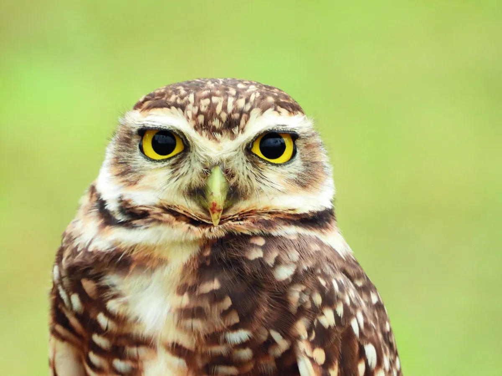
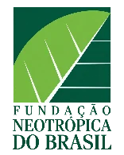
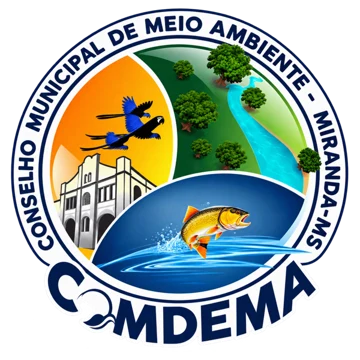

Proteção Integral
Objetivo: preservar a natureza. Só se admite o uso indireto dos recursos naturais.
- Estação Ecológica
- Reserva Biológica a REBIO de Miranda
- Parque Nacional
- Monumento Natural
- Refúgio de Vida Silvestre
Educação ambiental · Miranda/MS · 2026
Unidades de Conservação e observação de aves na Reserva Biológica Municipal Marechal Cândido Mariano Rondon, a REBIO de Miranda.



Fotos: Fundação Neotrópica do Brasil. Guia Fotográfico Aves do Mato Grosso do Sul.
O projeto
O projeto aproxima os estudantes da rede pública municipal do patrimônio natural de Miranda. A turma se prepara em sala, visita a REBIO para observar aves e, depois, transforma o que viu em desenhos na aula de artes.
Antes da visita · em sala
Na aula de ciências ou de geografia: o que é uma Unidade de Conservação, como funciona, quais são os tipos, introdução à observação de aves e divisão da turma em 5 grupos de 6 estudantes.
Dia da visita · na REBIO
Apresentação da REBIO, das normas de visitação e da prevenção de incêndios, com a experiência da brigada comunitária.
Caminhada pelo percurso autorizado pela SEMARH, com registro das aves vistas ou ouvidas no caderno de campo.
Cada grupo completa o caderno de campo e a lista de espécies da turma.
Roda de conversa, dúvidas, registro fotográfico e lanche coletivo.
Depois da visita · aula de artes
Cada estudante desenha uma espécie observada na REBIO. A turma vota e os 5 desenhos mais votados vão para o mural da escola.
Escola participante: Escola Municipal Waldemar João de Souza, 8º ano, período matutino. Visita prevista para 9, 10 ou 13 de novembro de 2026. Fonte: NOVAeng (2026).
A REBIO de Miranda
A Reserva Biológica é uma Unidade de Conservação de Proteção Integral. O objetivo dela é preservar os seres vivos e os demais atributos naturais dentro dos seus limites, sem interferência humana direta (BRASIL, 2000, art. 10).
Por isso a visita da turma é especial: ela só é possível porque tem objetivo educacional.
Durante a visita, a turma combina:
Unidades de Conservação
“Espaço territorial e seus recursos ambientais, incluindo as águas jurisdicionais, com características naturais relevantes, legalmente instituído pelo Poder Público, com objetivos de conservação e limites definidos, sob regime especial de administração, ao qual se aplicam garantias adequadas de proteção.”
Lei nº 9.985/2000, art. 2º, I (BRASIL, 2000)
Em outras palavras: é uma área criada oficialmente pelo poder público, com limites definidos, para proteger a natureza que existe nela, e que funciona com regras especiais de uso. No Brasil, as UCs fazem parte do SNUC, o Sistema Nacional de Unidades de Conservação da Natureza.
Objetivo: preservar a natureza. Só se admite o uso indireto dos recursos naturais.
Objetivo: compatibilizar a conservação da natureza com o uso sustentável de parte dos recursos naturais.
Fonte: Lei nº 9.985/2000, arts. 7º, 8º e 14 (BRASIL, 2000).
Área em hectares. Para a RPPN Estância Caiman, só a parte em Miranda.
Fonte dos dados: Cadastro Estadual de Unidades de Conservação, IMASUL (2026). A RPPN Estância Caiman (Dona Aracy) tem área em Miranda e em Aquidauana.
Como observar aves
Observar aves é exercitar a paciência e a atenção.
Muitas aves comem frutos e levam sementes para outros lugares, ajudando no crescimento de novas plantas.
Ao visitar flores para se alimentar de néctar, algumas aves carregam pólen de uma flor para outra.
Muitas se alimentam de insetos, pequenos animais e peixes, contribuindo para o equilíbrio do ambiente.
As aves podem ser consumidoras e também servir de alimento para outros animais.
Fonte: Caderno de Campo do projeto, NOVAeng (2026).
Galeria de aves
Todas estão no Guia Fotográfico Aves do Mato Grosso do Sul, da Fundação Neotrópica do Brasil. Marque Vi ou Ouvi para montar a sua lista. Ela fica salva só neste navegador.
Vulnerável espécie ameaçada de extinção, com alto risco de desaparecer na natureza.
Quase ameaçada ainda não está ameaçada, mas pode ficar se nada mudar.
Categorias da Lista Vermelha da IUCN, consultadas na BirdLife DataZone, e da Lista Nacional de Espécies da Fauna Ameaçadas de Extinção (Portaria MMA nº 1.704/2026). Toque na foto para ver a curiosidade completa e a fonte.
Nenhuma ave encontrada. Tente outro nome.
Curiosidades: WikiAves, a Enciclopédia das Aves do Brasil (wikiaves.com.br), uma página por espécie. Situação de conservação: IUCN, pela BirdLife DataZone (datazone.birdlife.org), consulta em nov. 2026, e Portaria MMA nº 1.704/2026.
Fotos e nomes: Fundação Neotrópica do Brasil. Guia Fotográfico Aves do Mato Grosso do Sul. Créditos fotográficos: Breenda Rezende Siqueira, Fernando de Almeida, Guilherme Dalponti, Jéssica Prestes e Meryelle Oliveira. Uso autorizado para os materiais do projeto.
Jogos
Dois jogos rápidos que retomam temas da visita à REBIO: a prevenção de incêndios e o caminho da água entre a vegetação, o solo e os córregos.
Arcade · 60 segundos
Você faz parte da brigada comunitária. Fique de olho nas causas do fogo: toque nelas para evitar o incêndio e toque nos focos para apagar antes que se espalhem.
Pronto para a brigada?
Bitucas de cigarro, queima de lixo e queimadas mal controladas começam incêndios. Evitar o fogo é melhor do que apagar.
Toque em Começar para entrar na brigada.
Na REBIO: na recepção da turma, a Fundação Neotrópica, que formou uma brigada comunitária contra incêndios na reserva, fala sobre a prevenção de incêndios em Unidades de Conservação, retomando a Campanha “Miranda Sem Fogo” (Ação 03). Segundo a campanha, o período de estiagem, entre julho e outubro, concentra o maior risco de incêndios na região, e entre as causas recorrentes estão as queimadas de manejo mal controladas, o descarte de bitucas de cigarro e a queima de resíduos domésticos.
Labirinto · 3 fases
Leve a gota da nascente até o córrego pelo caminho com vegetação. Evite as áreas degradadas: ali a água escorre e leva terra.
Da nascente ao córrego
Use as setas do teclado, deslize o dedo no labirinto ou toque nos botões abaixo.
Na REBIO: durante a trilha, a parada em nascente ou curso d’água relaciona vegetação, solo e disponibilidade de água, retomando o ciclo apresentado na Campanha “Água é Vida” (Ação 07). Segundo a campanha, a água depende de um ciclo integrado de chuva, vegetação, nascentes, córregos e rios, e a falta de vegetação na beira dos rios favorece o transporte de sedimentos.
Fontes: Projeto “Guardiões da Biodiversidade”, NOVAeng (2026); Campanhas “Miranda Sem Fogo” e “Água é Vida”, NOVAeng (2026).
Atividades
As mesmas atividades do caderno de campo, com correção na hora.
Leia o que cada UC permite, pela Lei do SNUC, e escolha o grupo.
Sobre o papel das aves na natureza.
Os significados foram resumidos da Lei do SNUC (BRASIL, 2000, art. 2º).
Memória do projeto
Este espaço guarda o registro do projeto. As fotos entram depois da visita, só de estudantes com o termo de uso de imagem assinado pelos responsáveis e sem nome ou outros dados pessoais.
As fotos da recepção, da trilha e da observação de aves aparecem aqui depois da visita à REBIO.
Os 5 desenhos mais votados pela turma, feitos na aula de artes, aparecem aqui depois da exposição no mural da escola.
Base de pesquisa
Os dados do projeto, como foram planejados. Projeto planejado segundo os critérios do Sistema Estadual de Informação em Educação Ambiental (SisEA/MS), com relatório final a ser cadastrado até 31 de março de 2027.
Promover o contato direto dos estudantes da rede pública municipal com uma Unidade de Conservação de proteção integral, a REBIO municipal, fortalecendo a compreensão sobre o conceito, o funcionamento e os tipos de Unidades de Conservação e sobre a importância delas para a proteção da biodiversidade e dos recursos hídricos, e o sentimento de pertencimento ao território do município.
| Indicador | Meta prevista |
|---|---|
| Visitas técnico-educativas realizadas | 1 |
| Escolas contempladas | 1 (Escola Municipal Waldemar João de Souza) |
| Estudantes atendidos | 1 turma do 8º ano, período matutino (até 30 estudantes) |
| Atividades de preparação com a turma | 1 |
| Atividades de consolidação depois da visita | 1 |
| Cadernos de campo preenchidos | 5 (1 por grupo de 6 estudantes) |
| Desenhos produzidos na aula de artes | até 30 (1 por estudante) |
| Desenhos expostos no mural da escola | 5 (os mais votados) |
| Parcerias formalizadas e autorização da visita pela SEMARH | 3 parcerias e 1 autorização |
| Relatório técnico e pedagógico | 1 |
| Etapa | Quando |
|---|---|
| Etapa 1: preparação com a turma | antes da visita |
| Etapas 2 a 5: visita à REBIO | 9, 10 ou 13 de novembro de 2026 |
| Etapa 6: consolidação na aula de artes | depois da visita, no ano-base de 2026 |
| Avaliação e relatório técnico e pedagógico | no ano-base de 2026 |
| Cadastro do relatório final no SisEA/MS | até 31 de março de 2027 |
REBIO municipal Marechal Cândido Mariano Rondon, em Miranda/MS, criada pelo Decreto nº 2.636, de 12/12/2017, com 868,5 ha (IMASUL, 2026). Público: uma turma do 8º ano do ensino fundamental da rede pública municipal, com até 30 estudantes, e 2 professores acompanhantes.
Fonte: NOVAeng (2026), Projeto “Guardiões da Biodiversidade”: Unidades de Conservação e Observação de Aves na REBIO.
Educação ambiental em Miranda
O Guardiões da Biodiversidade faz parte do conjunto de ações de educação ambiental do município. Cada ação vai ganhar o seu próprio site, que será ligado aqui.
Fonte: fichas técnicas das ações de educação ambiental de Miranda/MS, NOVAeng (2026).
Quem faz
Realização
Órgão gestor da REBIO e proponente do projeto. Autoriza a visita e define o percurso.

Parceria
Conduz a aula preparatória e apoia a visita guiada e a observação de aves. Autora do guia fotográfico.

Parceria
Conselho Municipal de Meio Ambiente. Acompanha a execução e aprecia o relatório final.
Parceria
Define a escola e a turma, ajusta o calendário e disponibiliza o transporte escolar.
Assessoria técnica
Assessoria técnica à SEMARH na coordenação do projeto e elaboração dos materiais.